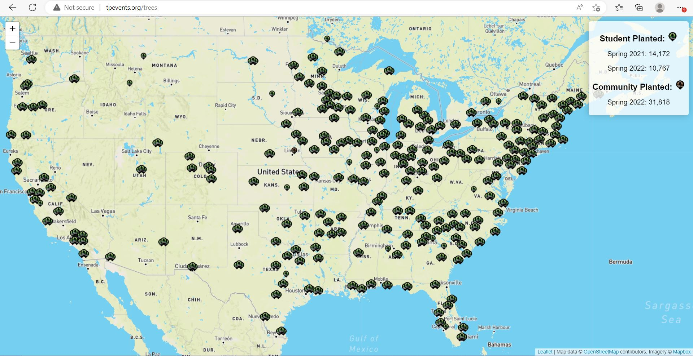
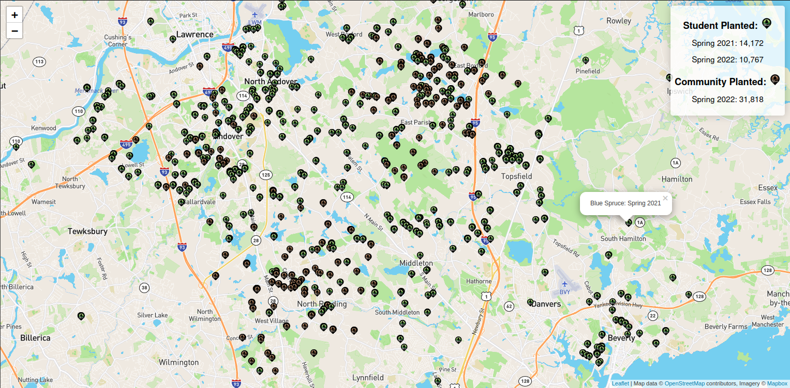
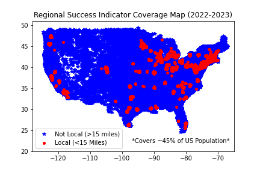
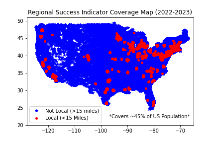
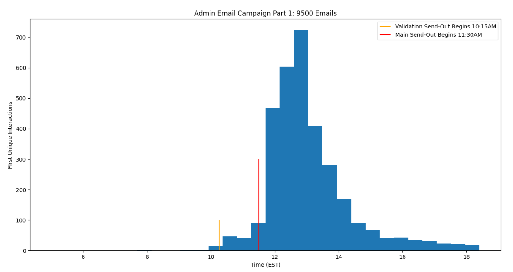

Data Analytics and Targeted Outreach
Various dashboards and software used in soliciting grant support and running targeted advertising campaigns.
Tree Map
Running resource showing the location of Tree-Plenish saplings. Used for grant applications and marketing. Pins geolocated from address data when available. Clustered by zip code for pickup only events (no addresses available).
tpevents.org/trees

Zoomed in view, Boston area.
Email-Drips
Custom email automation software designed to utilize Tree-Plenish's unique student network. Incorporates two seperate familiarity modes, engagement tracking, and traditional message personalization. Used for >10,000 administrator, teacher, and club advisor addresses obtained through a combination of scraping, manual retrieval and past email lists.
Local Ambassador - Familiarity Networking

To take advantage of Tree-Plenish's staff across the country, the "Local Ambassador" module chooses to use the sender & signoff information of an employee in a geographically advantageous position to highlight our locality. The distribution was assigned algorithmically using weighted distances. (Note: All names used had volunteered).
Regional Success Indicator - Familiarity Networking (First Used 2021-2022)
 

To take advantage of the prior year of events a regional indicator is used in the relevant areas. This translates into an added paragraph describing the closest event's successes to show the applicability for a Tree-Plenish event in the region. Note that this 15 mile condition is purposefully stretched to the nearest zipcode, in reality this assumes around 25 miles of name recognition.
Traffic & Engagement Tracking
Link-Based Engagement tracking was incorporated to provide time-based insights and to give an idea of the overall efficacy of this type of campaign.
Template and Results

Overall, this first campaign showed a 15% conversion rate from engagement (opened email) to further communication. Since then we have continued to use this automated strategy incorporating geographical factors as one of the main outreach methods.